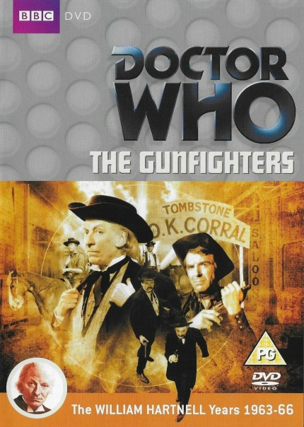
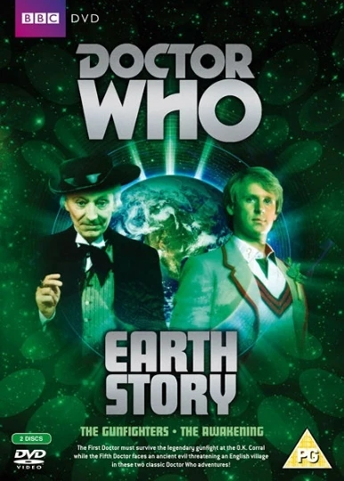
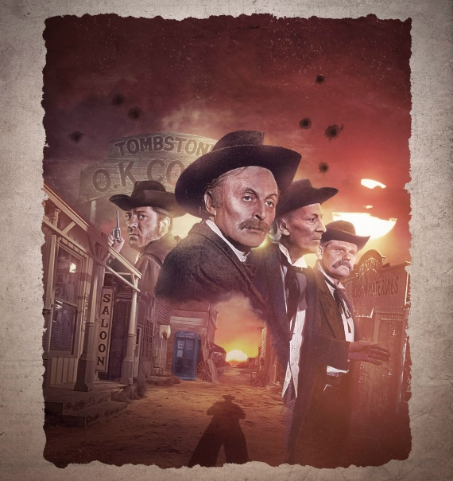
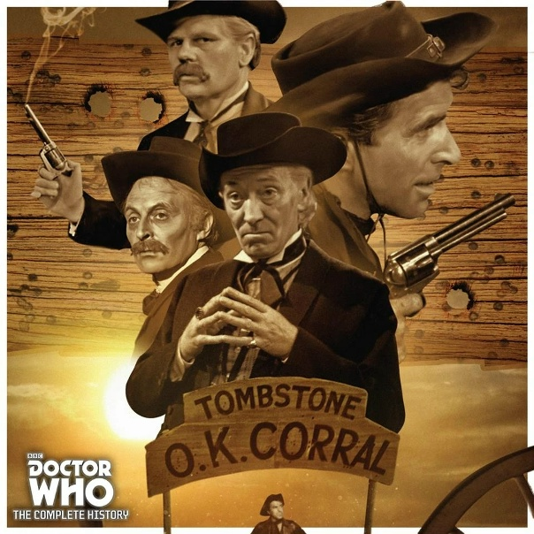

Эра Первого Доктора (3 сезон)
<<< НАЗАД ||| 8. Меткие стрелки ||| ДАЛЬШЕ >>>
Субтитры: Русские и Английские |  |
|---|
30 апреля - 21 мая 1966
4 эпизода по 25 мин.
| 1. Праздник для Доктора 2. Не стреляйте в пианиста 3. Джонни Ринго 4. Корраль О-Кей | Сохранились - 16mm t/r |
|---|
 |
«Меткие стрелки» переносят Доктора, Стивена и Додо в Тумстон 1881 года — в эпицентр противостояния Уайетта Эрпа и бандитов. Из‑за путаницы Доктора принимают за Дока Холлидея, и он оказывается в центре назревающей перестрелки у корраля О‑Кей. Доктор пытается разрядить конфликт и спасти спутников, не меняя историю, но напряжение нарастает: ставки высоки, а любое действие грозит исказить ход событий. Серия сплетает вестерн и моральную дилемму, показывая, как тонкая грань отделяет вмешательство от спасения — и почему иногда главное оружие Доктора не сила, а слово.
  VHS - ноябрь 2002 |   DVD+Boxset - 12 июля 2011 * Версия в нашей группе |
|---|




